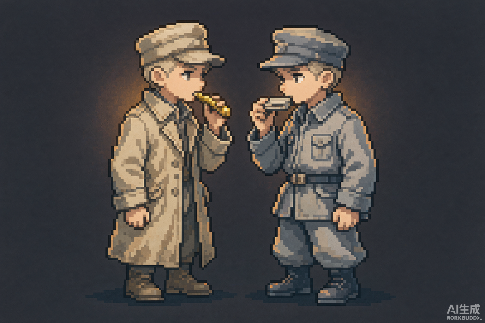

只有哨子，没有枪
全程无法射击，没有任何武器可以拾取。你唯一能发出的声音是一次口哨：它能叫停巡逻、提醒平民、回应对面——也仅此而已。
《边界哨声》不想让你成为英雄。它想让你站上扣动扳机的位置，然后发现——你手里没有枪，只有一只哨子。而当你吹响它，山谷对面会传来一模一样的回声。
战争结束，从来不是因为某一边赢了。而是因为终于有两拨人，同时听见了对方的声音。这份心情，也写在《世界和平》页。
全程无法射击，没有任何武器可以拾取。你唯一能发出的声音是一次口哨：它能叫停巡逻、提醒平民、回应对面——也仅此而已。
哨声会被听见——被你想保护的人，也被想消灭你的人。吹哨救对面的人，你的隐蔽值就会掉一格。救人与自保，永远不可能同时。
对面的哨兵有名字、有家书、有怕黑的小毛病，每晚八点准时吹走调的口琴。游戏没有任何「击杀」结算——它统计的是你让多少人看见了黎明。
色彩：32bit RGBA 真彩色。支持平滑渐变、软阴影、半透明图层与柔光——不再受老式色板的限制，但依然保持像素的克制。
右下角的开关就是游戏内的世界切换：安宁与战火共用同一个世界，色彩分层溶解、色相缓慢偏移、颗粒流动。切换时注意标题边缘的通道色散。



「你」——十八岁，哨兵。口袋里有一封没寄出去的信，收信人一栏写着「妈妈」。你的命令只有一条：不许越过冰河。
「对面的人」——同样十八岁。制服大了一号，每晚八点吹走调的口琴。第七夜之前，你永远不会知道他的名字——但你会认得他的琴声。
两个角色都是 64×64 px 的精灵，7 帧行走、4 帧吹哨、2 帧呼吸。呼吸帧是全局唯一常驻动画——雪一直在下，人一直活着。
一只旧黄铜哨子，祖父留下的，磕掉了一块漆。它不在道具栏里——它就是整个交互系统：短吹是询问，长吹是警告，按住不放，是把你自己交给对面的瞄准镜。
我们把全部玩法都压在这一个声音上。因为它足够小——小到像所有真实和平的开始。

每件遗物都独立精致绘制，材质清晰可辨。完好时是暖柔光；损毁后光晕发闷、色温下沉、边缘带细碎烟尘与色散。


点击下方画面任意位置（或用按钮）模拟一次流弹击中。注意：是微弱的冲击漫反射闪光，不是强光爆炸；画面是子像素微抖动，不是粗暴整图摇晃。
轮廓蒙上细灰颗粒，轻微色彩偏移，抖动幅度柔和。
画面色温下沉、颗粒密度上升、局部色彩色散。
教程夜。你学会的唯一技能，是把声音送过山谷。
一队人踏冰过河。吹哨，他们绕开雷区；沉默，你保住了自己的位置。
对面第一次吹响口琴。你有三秒钟决定要不要回应。
炮击将在黎明开始。这一次，哨声够响吗？
竖切可玩：第一夜至第三夜，核心循环与配音小样。
内容完结，中英日韩四语本地化，无障碍模式（字幕 / 音效提示 / 色觉增强）。
Steam / Epic 发售。首发收入的 2% 将继续投入星轨计划。